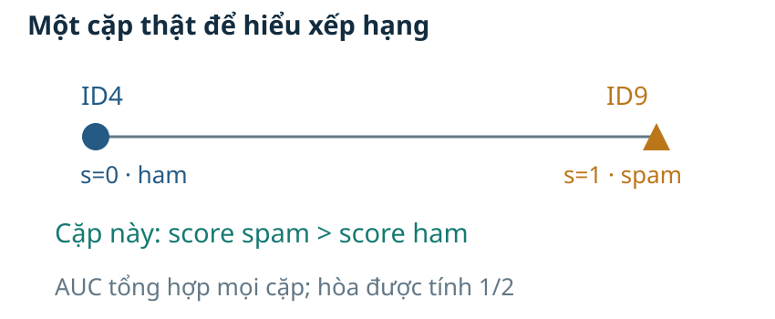
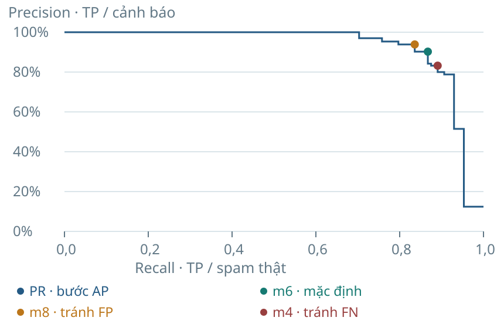

Tuyến chính cần đọc hiểu ROC–PR. Phần dưới giữ các ưu điểm của v3 và mở rộng phép tính khi đã vững bốn ô.

Điều kiện: có cả hai lớp và score hướng về spam. N₊=128, N₋=904 trên test lịch sử; score hòa tính một nửa. AUC≈0,9691 không phải tỷ lệ dự đoán đúng tại m6.

Viết các bước theo chiều recall tăng; mỗi mức tăng recall có trọng số precision tương ứng. AP≈0,9267; không thay bằng diện tích hình thang giữa các điểm PR. Trong output sklearn, recall thường giảm; mã dùng -sum(diff(recall)*precision[:-1]). Điểm cuối (recall=0,precision=1) do thư viện thêm không có một threshold đi kèm.
π là tỷ lệ dương thật; điều kiện mẫu số dương. Công thức giả định TPR/FPR cho bối cảnh đang xét. Nếu giữ TPR=0,8,FPR=0,1 và thay π từ 0,5 xuống 0,1, precision đổi từ 0,8889 xuống 0,4706. Đây là phân tích giả định, không phải test mới của mô hình SMS.
Score=v/11 mô tả tỷ lệ phiếu ở đặc trưng và train hiện tại. Calibration kiểm quan hệ giữa score và tần suất nhãn thật trên dữ liệu thích hợp. Không suy ra xác suất đúng hay áp dụng ngưỡng Bayes theo tỷ lệ chi phí khi chưa đáp ứng giả thiết xác suất/chi phí. Test có trường hợp phiếu đồng thuận nhưng sai nhãn, nên đồng thuận không bảo đảm đúng.
| Cách tổng hợp | Định nghĩa | Điều cần phân biệt |
|---|---|---|
| Macro | Trung bình chỉ số từng lớp | Macro-F1 là trung bình F1 lớp |
| Weighted | Trung bình theo số mẫu thật mỗi lớp | Lớp nhiều mẫu có trọng số lớn |
| Micro | Gộp các đếm trước khi tính | Đa lớp một nhãn, đủ lớp: micro P/R/F1 bằng accuracy |
Không tính macro-F1 bằng F1 của macro-precision và macro-recall; hai phép tổng hợp thường không bằng nhau. Mỗi lớp được coi là dương theo lượt khi tính các đếm của nó.
| Thật ↓ / dự đoán → | ham · 0 | spam · 1 |
|---|---|---|
| ham · 0 | TN = 904 | FP = 0 |
| spam · 1 | FN = 128 | TP = 0 |
| Trường hợp | Điều kiện toán học |
|---|---|
| Không có cảnh báo | TP+FP=0 → P chưa xác định |
| Không có dương thật | TP+FN=0 → R chưa xác định |
| Chỉ có TN | 2TP+FP+FN=0 → dạng đếm F1 chưa xác định |
Mã trong bài chọn zero_division=0: giá trị báo cáo là 0, kèm cờ cho biết mẫu số không có.
Ở mốc luôn ham: recall=0/128=0 có nghĩa; precision 0/0 cần công bố quy ước.
Khi P,R xác định nhưng đều bằng 0, dạng 2PR/(P+R) gặp 0/0; dạng đếm có thể vẫn xác định nếu có FP hoặc FN. Nếu TP=FP=FN=0, dạng đếm cũng chưa xác định. Mã trong bài báo 0 và lưu cờ definedness tương ứng.
Bộ test có 904 tin ham và 128 tin spam. Nếu luôn trả lời ham, ta đúng ở 904 tin nhưng bỏ lọt tất cả spam. Accuracy 87,60% vì thế chưa trả lời được hệ thống có phát hiện spam hay không. Câu hỏi của bài là cách đếm lỗi, đo kết quả và chọn quyết định theo mục tiêu.
Nguồn / đối chiếu: https://archive.ics.uci.edu/dataset/228/sms+spam+collection. Dữ liệu và mã tái lập đi kèm bài.
Năng lực cần đạt gồm cả phép tính và cách diễn giải. Gọi đúng một tên chỉ số chưa đủ nếu không biết nó chia cho nhóm nào. Một chính sách phải có tiêu chí lựa chọn và dữ liệu dùng để chọn. Cuối bài, bảng số và kết luận cần cho phép người khác kiểm lại.
Nguồn / đối chiếu: https://archive.ics.uci.edu/dataset/228/sms+spam+collection. Dữ liệu và mã tái lập đi kèm bài.
Ta dùng đầu ra của Bài 2 thay vì thay một case mới. Bốn ô là đầu vào chung của các chỉ số. Thay ngưỡng tạo ra bốn ô khác dù score giữ nguyên. Quy trình chọn chính sách và kiểm chứng giúp kết luận có thể giải thích.
Nguồn / đối chiếu: https://archive.ics.uci.edu/dataset/228/sms+spam+collection. Dữ liệu và mã tái lập đi kèm bài.
Dữ liệu, hai đặc trưng và mô hình được giữ từ Bài 2 v4. Score của kNN phiếu đều là tỷ lệ láng giềng mang nhãn spam. Ở k=11, quy tắc mặc định tương đương ít nhất sáu phiếu spam. Nhãn thật được dùng sau dự đoán để gọi tên kết quả. Test này đã xuất hiện ở các phiên bản trước nên không coi là một phép đánh giá mù mới.
Nguồn / đối chiếu: https://archive.ics.uci.edu/dataset/228/sms+spam+collection. Dữ liệu và mã tái lập đi kèm bài.
Văn bản gốc được giữ để kiểm số ký tự và chữ số. Tin có nhãn ham trong corpus nhưng sáu láng giềng mang nhãn spam nên mô hình trả spam. Đây là false positive khi spam là lớp dương. Hậu quả minh họa là một tin bình thường bị gắn cờ, không phải bỏ lọt spam.
Nguồn / đối chiếu: https://archive.ics.uci.edu/dataset/228/sms+spam+collection. Dữ liệu và mã tái lập đi kèm bài.
Tin 1501 mang nhãn spam nhưng chỉ bốn láng giềng mang nhãn spam. Quy tắc mặc định vì thế trả ham và tạo một false negative. Số chữ số ít không bảo đảm một tin là ham. Ví dụ cho thấy hai đặc trưng dễ nhìn cũng có giới hạn về khả năng phân biệt nội dung.
Nguồn / đối chiếu: https://archive.ics.uci.edu/dataset/228/sms+spam+collection. Dữ liệu và mã tái lập đi kèm bài.
Tên bốn ô phụ thuộc quy ước lớp dương. Positive và negative trong TP,FP,FN,TN nói về quyết định của mô hình. True và false nói quyết định đó có khớp nhãn thật hay không. Bốn ID thật giúp đối chiếu định nghĩa với văn bản và dự đoán.
Nguồn / đối chiếu: https://archive.ics.uci.edu/dataset/228/sms+spam+collection. Dữ liệu và mã tái lập đi kèm bài.
Mười tin A–J là dữ liệu mô phỏng, không phải trích mười SMS thật. Ta biết cả nhãn thật và score để thực hành đếm. Quy tắc lấy cả điểm bằng ngưỡng, nên sáu ID A–F được gắn cờ. Bốn tin có nhãn spam là A,C,D,F. Các ID và score này giữ nguyên khi học chỉ số và ngưỡng.
Nguồn / đối chiếu: https://archive.ics.uci.edu/dataset/228/sms+spam+collection. Dữ liệu và mã tái lập đi kèm bài.
G,H,I,J có cả nhãn thật và dự đoán ham nên thuộc TN. B,E có nhãn ham nhưng được gắn cờ nên thuộc FP. A,C,D,F là spam và đều được gắn cờ nên thuộc TP, chưa có FN ở ngưỡng này. Tổng bốn ô là mười vì mỗi ID chỉ đi vào một ô.
Nguồn / đối chiếu: https://archive.ics.uci.edu/dataset/228/sms+spam+collection. Dữ liệu và mã tái lập đi kèm bài.
A sai: TP cần y=1 và ŷ=1. B đúng: mô hình dự đoán dương nhưng nhãn thật âm, nên đây là FP. C sai: FN cần y=1 và ŷ=0, tức bỏ lọt spam. D sai: TN cần cả nhãn thật và dự đoán bằng 0.
Nguồn / đối chiếu: https://archive.ics.uci.edu/dataset/228/sms+spam+collection. Dữ liệu và mã tái lập đi kèm bài.
A sai: TP cần y=1 và ŷ=1. B đúng: mô hình dự đoán dương nhưng nhãn thật âm, nên đây là FP. C sai: FN cần y=1 và ŷ=0, tức bỏ lọt spam. D sai: TN cần cả nhãn thật và dự đoán bằng 0.
Nguồn / đối chiếu: https://archive.ics.uci.edu/dataset/228/sms+spam+collection. Dữ liệu và mã tái lập đi kèm bài.
Tổng hàng lấy nhóm theo nhãn thật, còn tổng cột lấy nhóm theo dự đoán. Bốn spam thật không phải cùng nhóm với sáu cảnh báo. Các tổng lề là cách kiểm ma trận trước khi tính tỷ lệ. Khi đổi ngưỡng, tổng mỗi lớp thật giữ nguyên nhưng tổng cảnh báo có thể đổi.
Nguồn / đối chiếu: https://archive.ics.uci.edu/dataset/228/sms+spam+collection. Dữ liệu và mã tái lập đi kèm bài.
Cùng test có 904 ham và 128 spam, mô hình luôn ham đặt tất cả tin vào cột ham. Nó tạo 904 TN và 128 FN. Accuracy cao vì ham chiếm phần lớn mẫu, trong khi số spam tìm được bằng không. So sánh với mốc nền phải giữ cùng tập dữ liệu và cùng định nghĩa lớp.
Nguồn / đối chiếu: https://archive.ics.uci.edu/dataset/228/sms+spam+collection. Dữ liệu và mã tái lập đi kèm bài.
Infographic nối đúng chuỗi đã thực hành: ID, hai nhãn và ô được đếm. Hai tổng quan trọng là số spam thật và số cảnh báo. Mỗi tin chỉ thuộc một ô nên tổng bốn ô kiểm được N. Chặng tiếp theo dùng chính các nhóm này làm mẫu số, không tạo nhóm dữ liệu mới.
Nguồn / đối chiếu: https://archive.ics.uci.edu/dataset/228/sms+spam+collection. Dữ liệu và mã tái lập đi kèm bài.
Accuracy cộng hai ô đúng TP và TN rồi chia cho N. Trong mô phỏng, tám tin đúng trên mười tin cho 0,80. Trên test lịch sử, 111 cộng 892 cho 1003 tin đúng. Accuracy dùng mọi tin nên tỷ lệ hai lớp ảnh hưởng cách đọc một giá trị cao.
Nguồn / đối chiếu: https://scikit-learn.org/1.6/modules/model_evaluation.html. Dữ liệu và mã tái lập đi kèm bài.
Hai mô hình có cùng tám dự đoán đúng trên cùng số lượng hai lớp. A cảnh báo nhầm hai ham, còn B bỏ lọt hai spam. Accuracy không mô tả riêng hai hướng lỗi này. Cần chọn câu hỏi về cảnh báo hay bỏ lọt để đọc thêm chỉ số phù hợp.
Nguồn / đối chiếu: https://scikit-learn.org/1.6/modules/model_evaluation.html. Dữ liệu và mã tái lập đi kèm bài.
Nhóm được dự đoán spam có sáu ID A–F. Bốn ID A,C,D,F là spam thật, còn B,E là cảnh báo nhầm. Precision lấy bốn TP chia cho cả sáu cảnh báo. Phép chia chỉ có nghĩa khi số cảnh báo lớn hơn không.
Nguồn / đối chiếu: https://scikit-learn.org/1.6/modules/model_evaluation.html. Dữ liệu và mã tái lập đi kèm bài.
Nhóm spam thật gồm A,C,D,F dù mô hình có gắn cờ hay không. Ở ngưỡng 0,50 cả bốn đều được tìm thấy nên recall bằng một. Mẫu số là tổng spam thật TP cộng FN, khác với số cảnh báo. Nếu không có spam thật trong tập, tỷ lệ này chưa xác định bằng công thức.
Nguồn / đối chiếu: https://scikit-learn.org/1.6/modules/model_evaluation.html. Dữ liệu và mã tái lập đi kèm bài.
Hai cách nhìn dùng cùng bốn TP ở phần đúng. Precision mở nhóm theo dự đoán nên gồm cả B,E cảnh báo nhầm. Recall mở nhóm theo nhãn thật nên chỉ gồm bốn spam. Sơ đồ nhóm giúp tránh đổi chỗ mẫu số khi chỉ nhớ chữ P và R.
Nguồn / đối chiếu: https://scikit-learn.org/1.6/modules/model_evaluation.html. Dữ liệu và mã tái lập đi kèm bài.
F1 dùng trung bình điều hòa của precision và recall. Hai dạng công thức cho cùng kết quả khi các phép chia liên quan có nghĩa. Trong mô phỏng, hai TP ở mỗi phía tạo tử số tám và mẫu số mười. Trung bình cộng cho giá trị khác nên không thay công thức F1 bằng cách lấy trung bình thường.
Nguồn / đối chiếu: https://scikit-learn.org/1.6/modules/model_evaluation.html. Dữ liệu và mã tái lập đi kèm bài.
TN không xuất hiện trong công thức F1. F1 tổng hợp precision và recall nhưng không thay thế ma trận. Trọng số hậu quả của FP,FN cũng không có sẵn trong F1. Vì thế cùng một F1 chưa đủ để chọn chính sách cho mọi tình huống.
Nguồn / đối chiếu: https://scikit-learn.org/1.6/modules/model_evaluation.html. Dữ liệu và mã tái lập đi kèm bài.
Không có cảnh báo nghĩa là không có tập để đo chất lượng cảnh báo. Precision khi đó chưa xác định bằng phép chia. Mã chọn báo 0 theo zero_division=0 và lưu cờ precision_defined=False để người đọc biết đây là quy ước. Recall của mốc luôn ham vẫn xác định vì có 128 spam thật. Nếu chỉ có TN, cả precision,recall và dạng đếm F1 đều cần quy ước báo cáo.
Nguồn / đối chiếu: https://scikit-learn.org/1.6/modules/model_evaluation.html. Dữ liệu và mã tái lập đi kèm bài.
Ma trận thật có 123 cảnh báo và 128 spam thật. Precision chia 111 TP cho 123 cảnh báo; recall chia 111 cho 128 spam. F1 từ số đếm lấy hai lần 111 chia cho 251. Các tỷ lệ trên slide làm tròn để đọc, còn mã lưu giá trị đầy đủ.
Nguồn / đối chiếu: https://scikit-learn.org/1.6/modules/model_evaluation.html. Dữ liệu và mã tái lập đi kèm bài.
A sai: đã đổi chỗ nhóm cảnh báo và nhóm dương thật. B sai: recall phải chia cho TP+FN=30, không chia cho 20. C đúng: P=15/20=0,75 và R=15/30=0,50. D sai: precision phải chia cho TP+FP=20, không chia cho 30.
Nguồn / đối chiếu: https://scikit-learn.org/1.6/modules/model_evaluation.html. Dữ liệu và mã tái lập đi kèm bài.
A sai: đã đổi chỗ nhóm cảnh báo và nhóm dương thật. B sai: recall phải chia cho TP+FN=30, không chia cho 20. C đúng: P=15/20=0,75 và R=15/30=0,50. D sai: precision phải chia cho TP+FP=20, không chia cho 30.
Nguồn / đối chiếu: https://scikit-learn.org/1.6/modules/model_evaluation.html. Dữ liệu và mã tái lập đi kèm bài.
A sai: FP thuộc nhóm cảnh báo, không quyết định mẫu số recall. B đúng: A tìm 18 trong 20 spam, B tìm 10 trong 20 spam; đây là kết luận theo mục tiêu giảm bỏ lọt. C sai: cả hai có 88 dự đoán đúng nhưng khác FN và recall. D sai: biết tổng spam và FN thì suy ra TP và tính được recall.
Nguồn / đối chiếu: https://scikit-learn.org/1.6/modules/model_evaluation.html. Dữ liệu và mã tái lập đi kèm bài.
A sai: FP thuộc nhóm cảnh báo, không quyết định mẫu số recall. B đúng: A tìm 18 trong 20 spam, B tìm 10 trong 20 spam; đây là kết luận theo mục tiêu giảm bỏ lọt. C sai: cả hai có 88 dự đoán đúng nhưng khác FN và recall. D sai: biết tổng spam và FN thì suy ra TP và tính được recall.
Nguồn / đối chiếu: https://scikit-learn.org/1.6/modules/model_evaluation.html. Dữ liệu và mã tái lập đi kèm bài.
Một ma trận tạo ra nhiều tỷ lệ vì mỗi câu hỏi mở một nhóm mẫu khác nhau. Ví dụ mười tin vẫn giữ bốn TP,hai FP,không FN và bốn TN. Chọn đúng mẫu số trước khi tính số thập phân. Chỉ số nào cũng cần điều kiện và ý nghĩa khi đưa vào kết luận.
Nguồn / đối chiếu: https://scikit-learn.org/1.6/modules/model_evaluation.html. Dữ liệu và mã tái lập đi kèm bài.
Bốn ô và các nhóm mẫu số đã được xác định trước khi chuyển sang ngưỡng. Sau nghỉ, ta giữ cùng mười ID để thấy mỗi thay đổi tác động ở đâu. Câu hỏi cần mang theo là tăng ngưỡng làm điều gì thay đổi và điều gì giữ nguyên.
Nguồn / đối chiếu: https://scikit-learn.org/1.6/modules/model_evaluation.html. Dữ liệu và mã tái lập đi kèm bài.
Ngưỡng là ranh giới của quy tắc quyết định. Ta không huấn luyện lại mô hình trong phép so này nên score giữ nguyên. Những tin ở hoặc trên ngưỡng được gắn cờ spam. Chỉ nhãn dự đoán và các phép đếm tạo từ nó có thể thay đổi.
Nguồn / đối chiếu: https://scikit-learn.org/1.6/modules/classification_threshold.html. Dữ liệu và mã tái lập đi kèm bài.
Tại ngưỡng 0,50 cả A–F được gắn cờ. Tại ngưỡng 0,80 chỉ A,B,C còn được gắn cờ. D,F là spam thật còn E là ham thật, nên việc đổi quyết định không có cùng tác động đối với ba tin. Ta xác định ô mới bằng nhãn thật và dự đoán mới, không đổi nhãn nguồn.
Nguồn / đối chiếu: https://scikit-learn.org/1.6/modules/classification_threshold.html. Dữ liệu và mã tái lập đi kèm bài.
D,F chuyển từ TP sang FN vì là spam nhưng không còn được gắn cờ. E chuyển từ FP sang TN vì là ham và nay được giữ đúng. Precision ở hai ngưỡng này đều bằng hai phần ba, còn recall giảm từ một xuống một phần hai. Tổng mười tin và bốn spam thật không đổi nên có thể kiểm lại từng phép đếm.
Nguồn / đối chiếu: https://scikit-learn.org/1.6/modules/classification_threshold.html. Dữ liệu và mã tái lập đi kèm bài.
Tăng ngưỡng giữ nguyên score nên tập cảnh báo sau nằm trong tập trước. TP và FP đều không tăng, còn FN và TN không giảm. Khi có dương thật, mẫu số recall giữ nguyên nên recall không tăng. Precision chia hai số cùng có thể giảm, nên không có bảo đảm tăng; bỏ C khỏi A,B,C làm tỷ lệ giảm từ hai phần ba xuống một phần hai.
Nguồn / đối chiếu: https://scikit-learn.org/1.6/modules/classification_threshold.html. Dữ liệu và mã tái lập đi kèm bài.
Mỗi hướng lỗi có một trọng số được đặt theo tình huống sử dụng. Bài dùng hai giả định năm so với một để nhìn rõ việc mục tiêu làm đổi lựa chọn. Chi phí bằng số lỗi nhân với trọng số tương ứng rồi cộng lại. Các trọng số này không phải dữ liệu đo thực tế và phải được công bố trước khi chọn ngưỡng.
Nguồn / đối chiếu: https://scikit-learn.org/1.6/modules/classification_threshold.html. Dữ liệu và mã tái lập đi kèm bài.
Cùng hai ma trận cho hai bảng chi phí vì trọng số đổi. Nếu FP nặng hơn, ngưỡng 0,80 có chi phí bảy thay vì mười. Nếu FN nặng hơn, ngưỡng 0,50 có chi phí hai thay vì mười một. Đây là lựa chọn trong hai ứng viên đang so, không phải chứng minh tối ưu trên mọi ngưỡng; ở case thật ta sẽ công bố đầy đủ tập ứng viên.
Nguồn / đối chiếu: https://scikit-learn.org/1.6/modules/classification_threshold.html. Dữ liệu và mã tái lập đi kèm bài.
A sai: precision không có bảo đảm đơn điệu; ví dụ A,B,C là một phản ví dụ. B sai: tập cảnh báo thu hẹp nên FP không tăng khi score và nhãn thật giữ nguyên. C sai: mô hình không đổi nhưng quyết định đổi, nên TP có thể giảm. D đúng: loại một TP là C khiến phần spam đúng trong cảnh báo giảm từ 2/3 xuống 1/2.
Nguồn / đối chiếu: https://scikit-learn.org/1.6/modules/classification_threshold.html. Dữ liệu và mã tái lập đi kèm bài.
A sai: precision không có bảo đảm đơn điệu; ví dụ A,B,C là một phản ví dụ. B sai: tập cảnh báo thu hẹp nên FP không tăng khi score và nhãn thật giữ nguyên. C sai: mô hình không đổi nhưng quyết định đổi, nên TP có thể giảm. D đúng: loại một TP là C khiến phần spam đúng trong cảnh báo giảm từ 2/3 xuống 1/2.
Nguồn / đối chiếu: https://scikit-learn.org/1.6/modules/classification_threshold.html. Dữ liệu và mã tái lập đi kèm bài.
kNN phiếu đều có score bằng số láng giềng spam chia cho mười một. Số phiếu v có thể là các số nguyên từ không tới mười một. Ngưỡng mặc định 0,5 tương đương ít nhất sáu phiếu vì không thể có đúng 5,5 phiếu. Code kiểm score khớp v/11 trước khi dùng v nguyên để tránh nhầm ở biên số thực.
Nguồn / đối chiếu: https://scikit-learn.org/1.6/modules/classification_threshold.html. Dữ liệu và mã tái lập đi kèm bài.
m bằng không gắn cờ tất cả vì mọi số phiếu đều ít nhất bằng không. m bằng mười hai không gắn cờ tin nào vì mô hình chỉ có mười một phiếu. Các m ở giữa yêu cầu ít nhất m phiếu. Tập ứng viên vì thế gồm m từ không đến mười hai, kể cả các chính sách có thể tạo cùng quyết định nếu một mức score không xuất hiện.
Nguồn / đối chiếu: https://scikit-learn.org/1.6/modules/classification_threshold.html. Dữ liệu và mã tái lập đi kèm bài.
Bài dùng scaler và kNN đã học từ train. Validation chọn m theo mục tiêu và quy tắc hòa đã định trước. Cùng validation đã chọn k ở Bài 2, nên kết quả validation không phải đánh giá độc lập của mọi lựa chọn. Test lịch sử đã công bố chỉ được tái lập và báo cáo trong bài này, không được gọi là kiểm định mù mới.
Nguồn / đối chiếu: https://scikit-learn.org/1.6/modules/classification_threshold.html. Dữ liệu và mã tái lập đi kèm bài.
Các bước trong tổng kết đều dùng ví dụ đã học. Đổi ngưỡng giữ dữ liệu nguồn và score nhưng có thể đổi bốn ô. Cách cộng chi phí phụ thuộc trọng số đặt trước, nên lựa chọn có thể đổi theo mục tiêu. Precision không có bảo đảm tăng và các trường hợp biên phải nằm trong tập chính sách thật.
Nguồn / đối chiếu: https://scikit-learn.org/1.6/modules/classification_threshold.html. Dữ liệu và mã tái lập đi kèm bài.
Validation và test có cùng số tin nhưng số lượng lớp khác nhau. Tập validation có 129 spam, còn test có 128 spam. Khi tính recall phải lấy tổng dương thật của đúng tập. Biểu đồ đếm và bảng vai trò giúp giữ tách biệt dữ liệu lựa chọn với dữ liệu báo cáo.
Nguồn / đối chiếu: https://archive.ics.uci.edu/dataset/228/sms+spam+collection. Dữ liệu và mã tái lập đi kèm bài.
Hai đường chi phí được tính từ cùng score validation ở mọi m đã công bố. Điểm m bằng không có chi phí lớn khi mọi ham bị gắn cờ, nên đồ thị toàn miền làm vùng cực tiểu nhỏ. Hình phóng đại m từ ba tới chín cho phép thấy hai cực tiểu mà vẫn giữ hình toàn miền để kiểm các biên. Mỗi lựa chọn gắn với đúng mục tiêu, không đọc chung hai đường như một chi phí.
Nguồn / đối chiếu: https://scikit-learn.org/1.6/modules/classification_threshold.html. Dữ liệu và mã tái lập đi kèm bài.
m bằng tám đạt chi phí 39 theo trọng số nặng FP. m bằng bốn đạt chi phí 77 theo trọng số nặng FN. Hai giá trị chi phí thuộc hai mục tiêu khác nhau nên không so 39 với 77 để kết luận một mục tiêu tốt hơn. Cả hai là cực tiểu trên tập ứng viên đã định, chưa chứng minh tối ưu cho một dữ liệu hoặc mô hình khác.
Nguồn / đối chiếu: https://archive.ics.uci.edu/dataset/228/sms+spam+collection. Dữ liệu và mã tái lập đi kèm bài.
Bản ghi chính sách lưu tên, mục tiêu, tập ứng viên và quy tắc hòa. Mặc định sáu phiếu là mốc của Bài 2, không phải kết quả tối ưu cho cả hai chi phí. Hai m được chọn từ validation sau đó giữ nguyên khi báo test lịch sử. Mô hình vẫn dùng train, không refit bằng train cộng validation trong quy trình này.
Nguồn / đối chiếu: https://scikit-learn.org/1.6/modules/classification_threshold.html. Dữ liệu và mã tái lập đi kèm bài.
Ba chính sách áp dụng lên cùng score test và cùng nhãn nguồn. Tăng từ sáu lên tám phiếu làm bớt năm FP nhưng thêm bốn FN. Giảm xuống bốn phiếu tìm thêm ba spam nhưng thêm mười một cảnh báo nhầm. Các tổng hàng vẫn là 904 ham và 128 spam, giúp kiểm phép đếm.
Nguồn / đối chiếu: https://archive.ics.uci.edu/dataset/228/sms+spam+collection. Dữ liệu và mã tái lập đi kèm bài.
Chỉ số và số cảnh báo được tính từ ba ma trận ở slide trước. m8 giảm số cảnh báo và nâng precision nhưng giảm recall; F1 vẫn xấp xỉ 88,4%. m4 có recall cao hơn m6 nhưng precision thấp hơn vì tăng cảnh báo nhầm. Chi phí báo theo từng mục tiêu, không dùng bảng test để đổi chính sách đã chọn.
Nguồn / đối chiếu: https://archive.ics.uci.edu/dataset/228/sms+spam+collection. Dữ liệu và mã tái lập đi kèm bài.
A đúng: validation phục vụ lựa chọn, chính sách khóa trước khi báo test và lịch sử test được công bố. B sai: dùng test để chọn phá vai trò của tập báo cáo. C sai: kết quả trên dữ liệu tham gia lựa chọn không phải đánh giá độc lập mới. D sai: validation đã tham gia chọn k và m nên điểm ở đó có thể lạc quan.
Nguồn / đối chiếu: https://scikit-learn.org/1.6/modules/classification_threshold.html. Dữ liệu và mã tái lập đi kèm bài.
A đúng: validation phục vụ lựa chọn, chính sách khóa trước khi báo test và lịch sử test được công bố. B sai: dùng test để chọn phá vai trò của tập báo cáo. C sai: kết quả trên dữ liệu tham gia lựa chọn không phải đánh giá độc lập mới. D sai: validation đã tham gia chọn k và m nên điểm ở đó có thể lạc quan.
Nguồn / đối chiếu: https://scikit-learn.org/1.6/modules/classification_threshold.html. Dữ liệu và mã tái lập đi kèm bài.
Mỗi ngưỡng tạo một cặp FPR,TPR trên ROC và một cặp recall,precision trên PR. ROC chia FP cho toàn ham thật, còn TPR chính là recall đã học. Các điểm m6,m8,m4 được đánh dấu theo cùng ma trận test. PR dùng các bước thay đổi recall để thể hiện score rời rạc; không làm mượt đường qua các điểm. Hai đồ thị giúp đọc nhiều quyết định nhưng mục tiêu sử dụng vẫn cần được xác định.
Nguồn / đối chiếu: https://scikit-learn.org/1.6/modules/generated/sklearn.metrics.precision_recall_curve.html. Dữ liệu và mã tái lập đi kèm bài.
Một cặp spam và ham giúp nhìn ý nghĩa của thứ tự score; AUC tổng hợp mọi cặp và xử lý score hòa. AP tổng hợp precision theo mức tăng recall, khác diện tích hình thang của PR. Hai chỉ số dùng nhãn thật và score, nên đổi riêng ngưỡng không đổi các đầu vào đó. Giá trị AUC và AP không có cùng cách tính để so số nào lớn hơn như bằng chứng tốt hơn. Tỷ lệ phiếu chưa chứng minh là xác suất đã hiệu chỉnh.
Nguồn / đối chiếu: https://scikit-learn.org/1.6/modules/generated/sklearn.metrics.average_precision_score.html. Dữ liệu và mã tái lập đi kèm bài.
A sai: ngưỡng có thể đổi tập cảnh báo và các phép đếm, nên precision hoặc recall có thể đổi. B sai: ROC-AUC(score) dùng y thật và score, hai đầu vào vẫn giữ nguyên. C đúng: chất lượng xếp hạng từ cùng score giữ nguyên, còn quyết định tại ngưỡng có thể đổi. D sai: đổi quy tắc quyết định không thực hiện hiệu chỉnh xác suất.
Nguồn / đối chiếu: https://scikit-learn.org/1.6/modules/generated/sklearn.metrics.average_precision_score.html. Dữ liệu và mã tái lập đi kèm bài.
A sai: ngưỡng có thể đổi tập cảnh báo và các phép đếm, nên precision hoặc recall có thể đổi. B sai: ROC-AUC(score) dùng y thật và score, hai đầu vào vẫn giữ nguyên. C đúng: chất lượng xếp hạng từ cùng score giữ nguyên, còn quyết định tại ngưỡng có thể đổi. D sai: đổi quy tắc quyết định không thực hiện hiệu chỉnh xác suất.
Nguồn / đối chiếu: https://scikit-learn.org/1.6/modules/generated/sklearn.metrics.average_precision_score.html. Dữ liệu và mã tái lập đi kèm bài.
Báo cáo có căn cứ chỉ ra dữ liệu, mô hình và ngưỡng trước khi đọc các chỉ số. Ma trận mặc định cho 111 TP trong 123 cảnh báo và 128 spam thật. Chính sách m8 được chọn trên validation theo mục tiêu tránh FP; test cho thấy đánh đổi đã trình bày. Đây là test lịch sử và corpus tiếng Anh, nên kết luận không mặc nhiên áp dụng cho SMS tiếng Việt hiện nay.
Nguồn / đối chiếu: https://archive.ics.uci.edu/dataset/228/sms+spam+collection. Dữ liệu và mã tái lập đi kèm bài.
Code theo cùng các bước đã làm bằng tay. Chỉ chuyển score thành phiếu sau khi kiểm score khớp các mức v/11. confusion_matrix với labels=[0,1] giữ hàng thật và cột dự đoán theo ham trước,spam sau. Các chỉ số quyết định nhận y_hat, còn ROC-AUC/AP nhận score. Mã đầy đủ cũng lưu điều kiện của mẫu số, dữ liệu và chính sách.
Nguồn / đối chiếu: https://scikit-learn.org/1.6/modules/model_evaluation.html. Dữ liệu và mã tái lập đi kèm bài.
Một kết quả chạy không báo lỗi chưa đủ chứng minh toàn bộ quy trình đúng. Ta kiểm từ dữ liệu và ID trước khi kiểm nhãn quyết định. Tổng lề giúp phát hiện dùng lẫn lớp hoặc dùng lẫn tập. Công thức được đối chiếu thư viện với quy ước mẫu số bằng không rõ ràng. Cuối cùng kết luận phải theo mục tiêu đã đặt, không vượt phạm vi của dữ liệu.
Nguồn / đối chiếu: https://scikit-learn.org/1.6/modules/model_evaluation.html. Dữ liệu và mã tái lập đi kèm bài.
Tin 1056 có sáu phiếu nên được gắn cờ ở m4 và m6 nhưng không ở m8. Nhãn ham làm kết quả chuyển từ FP sang TN khi tăng lên tám phiếu. Tin 1501 có bốn phiếu nên được tìm được ở m4, còn m6 và m8 bỏ lọt. Hai đường đi cụ thể giải thích cơ chế của đánh đổi; toàn bộ ma trận mới cho biết tổng tác động trên tập.
Nguồn / đối chiếu: https://archive.ics.uci.edu/dataset/228/sms+spam+collection. Dữ liệu và mã tái lập đi kèm bài.
A sai: đồng thuận láng giềng không bảo đảm khớp nhãn thật. B đúng: 11/11 mô tả phiếu của mô hình; độ đúng và hiệu chỉnh xác suất cần bằng chứng riêng. C sai: tỷ lệ phiếu một không chứng minh xác suất đúng đã hiệu chỉnh. D sai: hai đặc trưng hình thức và corpus tiếng Anh không chứng minh hiểu nghĩa tiếng Việt.
Nguồn / đối chiếu: https://scikit-learn.org/1.6/modules/model_evaluation.html. Dữ liệu và mã tái lập đi kèm bài.
A sai: đồng thuận láng giềng không bảo đảm khớp nhãn thật. B đúng: 11/11 mô tả phiếu của mô hình; độ đúng và hiệu chỉnh xác suất cần bằng chứng riêng. C sai: tỷ lệ phiếu một không chứng minh xác suất đúng đã hiệu chỉnh. D sai: hai đặc trưng hình thức và corpus tiếng Anh không chứng minh hiểu nghĩa tiếng Việt.
Nguồn / đối chiếu: https://scikit-learn.org/1.6/modules/model_evaluation.html. Dữ liệu và mã tái lập đi kèm bài.
Phiếu dùng một ma trận mới để tránh chỉ nhớ kết quả mười tin. Hai yêu cầu đầu kiểm phép đếm và diễn giải hướng lỗi. Yêu cầu quy trình kiểm vai trò dữ liệu khi chọn ngưỡng. Yêu cầu cuối kiểm khả năng nêu phạm vi kết luận chứ không lặp một chỉ số.
Nguồn / đối chiếu: https://scikit-learn.org/1.6/modules/model_evaluation.html. Dữ liệu và mã tái lập đi kèm bài.
Có năm cảnh báo và năm spam thật nên cả hai tỷ lệ là ba phần năm. Hai nhóm có cùng số lượng nhưng không phải cùng định nghĩa. F1 từ số đếm là sáu chia mười. Rubric dành điểm cho cả phép tính, ý nghĩa lỗi, quy trình chọn và giới hạn, giúp sinh viên xác định phần cần tự sửa.
Nguồn / đối chiếu: https://scikit-learn.org/1.6/modules/model_evaluation.html. Dữ liệu và mã tái lập đi kèm bài.
Tổng kết dùng phiếu hai mươi tin đã chữa để nối phép tính với kiểm chứng. CSV và chính sách là đường đi tới các số đếm. Công thức và Python cần khớp nhau với điều kiện báo cáo đã công bố. Kết luận cuối phải nói rõ mục tiêu và giới hạn chứ không chỉ nêu F1.
Nguồn / đối chiếu: https://scikit-learn.org/1.6/modules/model_evaluation.html. Dữ liệu và mã tái lập đi kèm bài.
Bản đồ liên kết năm câu hỏi của bài theo đường đi dữ liệu và quyết định. Ma trận mặc định là nguồn để đọc hai nhóm mẫu số quan trọng. Chính sách khác thay đánh đổi nên cần mục tiêu và cách chọn rõ ràng. Các bước kiểm chứng giữ lời kết luận có thể tái lập và có phạm vi. Bài 4 chuyển sang đích số liên tục nên cần cách đo sai số khác với bốn ô phân loại.
Nguồn / đối chiếu: https://scikit-learn.org/1.6/modules/model_evaluation.html. Dữ liệu và mã tái lập đi kèm bài.
Corpus SMS và mã băm cố định giúp chọn đúng dữ liệu khi tái lập. Tài liệu chính thức định nghĩa các chỉ số và cách xử lý biên. Gói học liệu có đường đọc trước, thực hành, quiz và infographic riêng. Trang bắt đầu liên kết các tài nguyên theo mục đích sử dụng để có thể mở sau khi giải nén.
Nguồn / đối chiếu: https://archive.ics.uci.edu/dataset/228/sms+spam+collection. Dữ liệu và mã tái lập đi kèm bài.